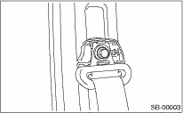
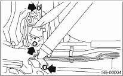
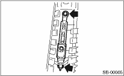
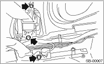
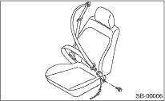

1. Before working, turn the ignition switch to OFF, disconnect the battery ground cable, and wait for 20 seconds or more.
2. Fold the backrest all the way forward, and then move the front seat all the way forward.
3. Remove the center pillar lower trim. 
4. Remove the anchor cover. Loosen the shoulder anchor bolt, and then detach the shoulder anchor from center pillar.

5. Pull off the floor mat to remove the bolt.

6. Disconnect the yellow connector of pretensioner harness, and remove the front outer belt.
7. Remove the center pillar upper trim.
8. Remove the two bolts to remove the adjustable anchor assembly.

CAUTION:
• Do not drop or apply any impact to the pretensioner.
• Since the pretensioner and bracket are integrated as a unit, do not disassemble them.
2. FRONT OUTER BELT (WITH LAP BELT PRETENSIONER)
1. Fold the backrest all the way forward, and then move the front seat all the way forward.
2. Before working, turn the ignition switch to OFF, disconnect the battery ground cable, and wait for 20 seconds or more.
3. Remove the center pillar lower trim.
4. Remove the anchor cover. Loosen the shoulder anchor bolt, and then detach the shoulder anchor from center pillar.
5. Remove the floor mat, then remove the bolt.

6. Disconnect the yellow connector of the pretensioner harness and the orange connector of the lap belt pretensioner harness, then remove the front outer belt.
7. Remove the center pillar upper trim.
8. Remove the two bolts to remove the adjustable anchor assembly.
CAUTION:
• Do not drop or subject the pretensioner to any impacts.
• Since the pretensioner and bracket are integrated as a unit, do not disassemble them.
1. Turn the ignition switch to OFF, disconnect the battery ground cable, and wait 20 seconds or more.
2. Remove the console box.
3. Disconnect the seat belt warning light connector under the seat.
4. Remove the harness clips from slide rail.
5. Remove the anchor bolt, and detach the inner seat belt assembly.
